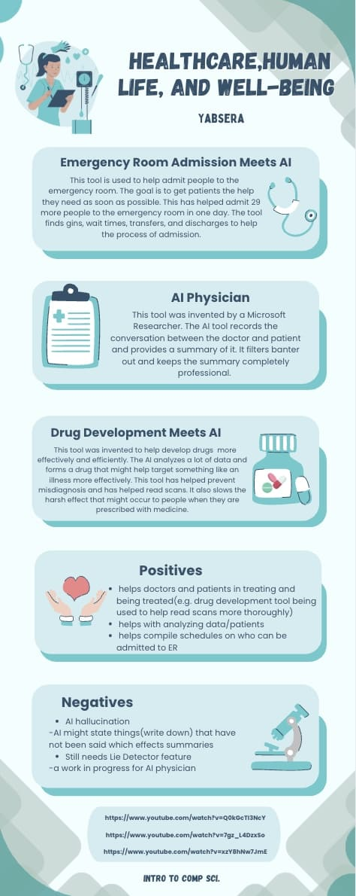

Artificial intelligence is becoming a very important part of the medical field because it helps doctors
and hospitals improve patient care and make healthcare more efficient. AI can analyze large amounts of medical data quickly,
helping doctors diagnose diseases earlier and more accurately. It is used to develop drugs, monitor patients feedback, predict
health risks, and assist with treatments. Hospitals also use AI to organize patient records, schedule appointments, and reduce mistakes,
which saves time and helps doctors focus more on caring for patients. As technology continues to grow, AI will play an even bigger role in medicine
by helping medical professionals make better decisions and improve the quality of healthcare for people around the world. Learning about both technology and
medicine is important because the two fields are becoming more connected every year.
In the future, I want to become a female doctor because I enjoy helping people and want to make a positive impact in my community. I am interested in science and healthcare, and I would like to support patients during difficult times while helping them feel safe and cared for. I also think it is important for young girls to see strong female leaders in the medical field who inspire others to follow their dreams. Becoming a doctor would allow me to combine compassion, education, and modern technology to improve people’s lives every day.
